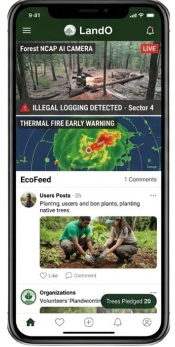

Welcome to LandO
Discover the beauty of nature and the importance of preserving our land.
Protecting, restoring, and promoting sustainable use of our forests, wildlife,
Click Me


THE PROBLEM
Every year, millions of hectares of forests are cleared through deforestation, habitat destruction, and devastating forest fires—accelerating climate change and destroying vital ecosystems.
Land degradation and desertification now threaten over one-third of the Earth's land surface, putting over one million plant and animal species at risk of extinction.



SOLUTION:
LANDO APP
LandO App is a mobile application that supports SDG 15: Life on Land by protecting forests, preventing illegal logging, and promoting reforestation. It features a forest-focused social media platform, Tree Planting Challenges, CCTV surveillance, and real-time forest monitoring.
It also allows users to report illegal activities and enables authorities to respond immediately to forest threats. Through technology and community participation, LandO aims to create a greener and safer environment for future generations.